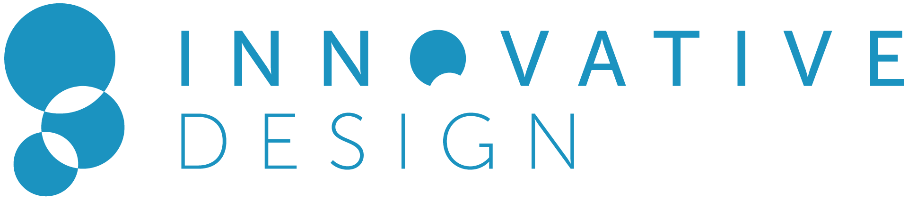

Our applications have closed for this semester. We would love to accept more but the team is currently busy reading through all the submissions for the Fall 2014 semester.
Watch for us in the Spring to join in on Making Berkeley Beautiful!